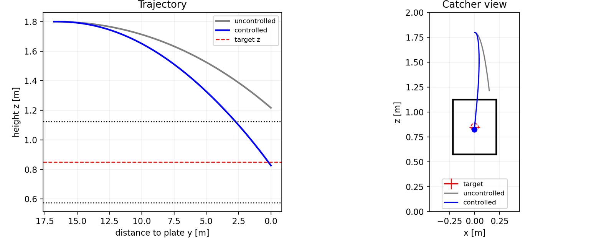
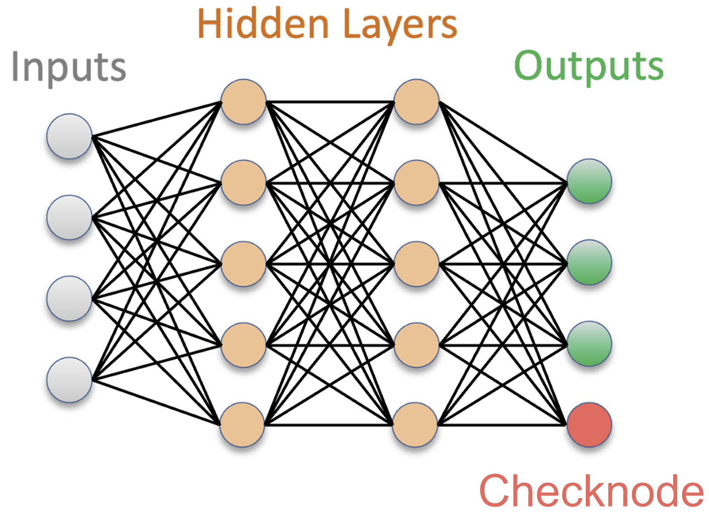
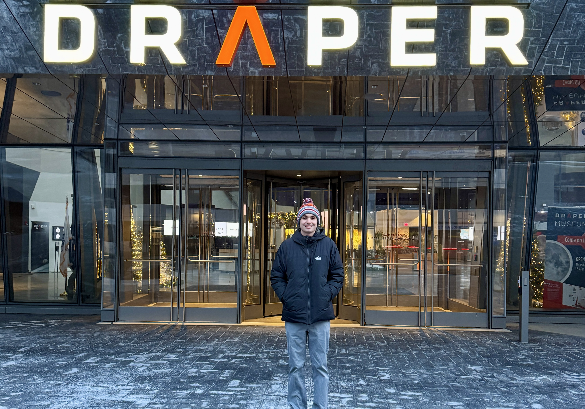
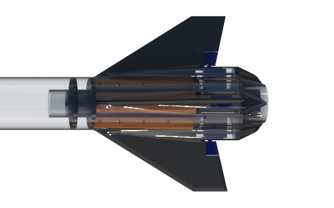

image placeholder
In progress (Project Based Course)
Guidance, Navigation and Control
I am a senior in aerospace engineering at the University of Illinois at Urbana-Champaign focused on advancing guidance, navigation, and control algorithms to shape the future of space exploration.
Collection of some of the various projects and experiences that I have worked on over the past few years.

A closed-loop 6-DOF GNC stack that steers a pitched baseball into the strike zone using Magnus force alone. One IMU, three reaction wheels, an 11-state EKF, a closed-form kinematic guidance law, and a Monte Carlo campaign that takes the strike rate from 25% to 100%.

A soft checksum lets a regression surrogate flag its own out-of-distribution inputs from a single extra output node, no ensemble required. On a 0-D combustion dataset it separates in-distribution from out-of-distribution predictions at 99.66% AUROC.

Six months as a guidance, navigation, and control engineer at Draper. I worked on GNC design for a novel vehicle, trajectory optimization, and on a 6-DOF simulation framework.

Active roll control for a high-power rocket at Liquid Rocketry at Illinois. CFD-derived control authority, surface sizing, and a rate-damping loop running on an onboard state estimate.